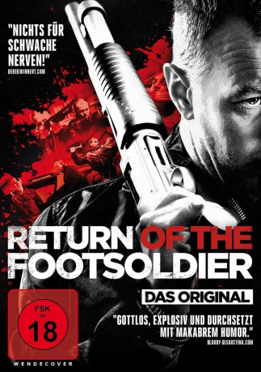

#8211 Return of the Footsoldier
Alternativ: Rise of the Footsoldier Part II
 
 IMDB-Wertung: 5.3 / 10
IMDB-Wertung: 5.3 / 10  Metascore: 0
Metascore: 0 
In einer kleinen Stadt in Essex bei London werden am 6. Dezember 1995 drei Mitglieder der Essex Gang in einem Range Rover brutal ermordet. Schockiert vom Tod seiner Kameraden, ist sich Drogen-Gangster Carlton Leach (Ricci Harnett) sicher, dass nun sein Name ganz oben auf der Todesliste der Attentäter steht. Er entwickelt heftige paranoide Tendenzen und ertränkt seine Angst in Alkohol und Kokain. Sein Ruf als Größe im Handel mit Ecstasy nimmt nach und nach ab, und er muss sich etwas einfallen lassen, um in der Unterwelt weiterhin mitmischen zu können. Er entscheidet sich dafür, sich wieder hochzukämpfen und gründet eine neue Gang. Als die Mitglieder der Bande ihre Aktivitäten als Handlanger, Security und Vollstrecker jedoch auf Südportugal ausdehnen, geraten sie an einen Gegner, mit dem nicht gut Kirschen essen ist
Jahr: 2015
Dauer: 111 Minuten
FSK: 18
Land: England Studio: Ascot Elite Entertainment GroupTonspuren: DTS - ,
Untertitel:
Auflösung: 1080p (1920x808) Größe: 6748 MB
Genre: Drama, Krimi, Biographie
Regisseur: Ricci Harnett
Drehbuch: Ricci Harnett
Soundtrack: Philip Curran
Darsteller:
- Charlie Heaton als Dealer
 Steven Berkoff als Dr. Flint
Steven Berkoff als Dr. Flint- Luke Mably als Shawn
 Craig Fairbrass als Pat Tate (Flashback)
Craig Fairbrass als Pat Tate (Flashback) Terry Stone als Tony Tucker (Flashback)
Terry Stone als Tony Tucker (Flashback) Nabil Elouahabi als Demirkan
Nabil Elouahabi als Demirkan- Mark Preston als Hans vanderbilt / Dutch customs officer
- Kiera Bell als 90's Girl
 Roland Manookian als Craig Rolfe (Flashback)
Roland Manookian als Craig Rolfe (Flashback) Ryan Oliva als Kenny Davis
Ryan Oliva als Kenny Davis Tygo Gernandt als Lars
Tygo Gernandt als Lars Michael Chapman als Strip club punter
Michael Chapman als Strip club punter- Neil Bishop als Party Goer
 Jonathan Harden als Dave
Jonathan Harden als Dave- Joshua Osei als Kev
- Chris Brazier als Matthew Taylor
- Edwin De La Renta als Crackhead
 Johnny Palmiero als Mad Jack
Johnny Palmiero als Mad Jack- Joel Morris als Stan
- Tony Fadil als Bolek Dutch Lorry driver
- Alicia Woodhouse als 90's Girl
- Kwame Augustine als Bouncer
- Lockhart Ogilvie als Afanas
- Adrian Derrick-Palmer als Josh (Club Barman)
- Dominic Kinnaird als Trev
- Greg Burridge als Gypsy Fighter
- Lindy Pieri als Restaurant Customer
- Ricci Harnett als Carlton Leach
- Nico Birnbaum als Stan (uncredited)
- Andy Linden als Reg
 Daniel Adegboyega als Steve
Daniel Adegboyega als Steve- Lee Mayo als Football fan
- Richard Wisker als Nicky
- Farshid Rokey als Abbas
- Coralie Rose als Denny
- Slaine Kelly als Lucy
- Scott Peden als Fearless
- Jasper Britton als Norton
- Peter Benedict als Geoff King
- Taylor Tay als Polish Gang Member
- Bill Bagnall als Football fan
- Big Narstie als Bob
- Chris Martin Hill als Benny White
- Christian Di Sciullo als Clubber-squares up to Ricci
- Billy James Machin als Clubber
- Neil Alexander Smith als Benny White's Nephew
- Sara Parker als Barmaid
- Emily Cassie als Wet T-Shirt Competitor
- Georgia Bourke als Carly
- Mitesh Soni als Sonny
Datei: X:\FSK18-Collections\Footsoldier\Return of the Footsoldier (2015, FSK18, 1920x808).mkv seit 07.02.2018
Festplatte: FSK18
 Es gibt insgesamt 7 Filme in der Gruppe 'FSK18-Collections\Footsoldier'
Es gibt insgesamt 7 Filme in der Gruppe 'FSK18-Collections\Footsoldier'